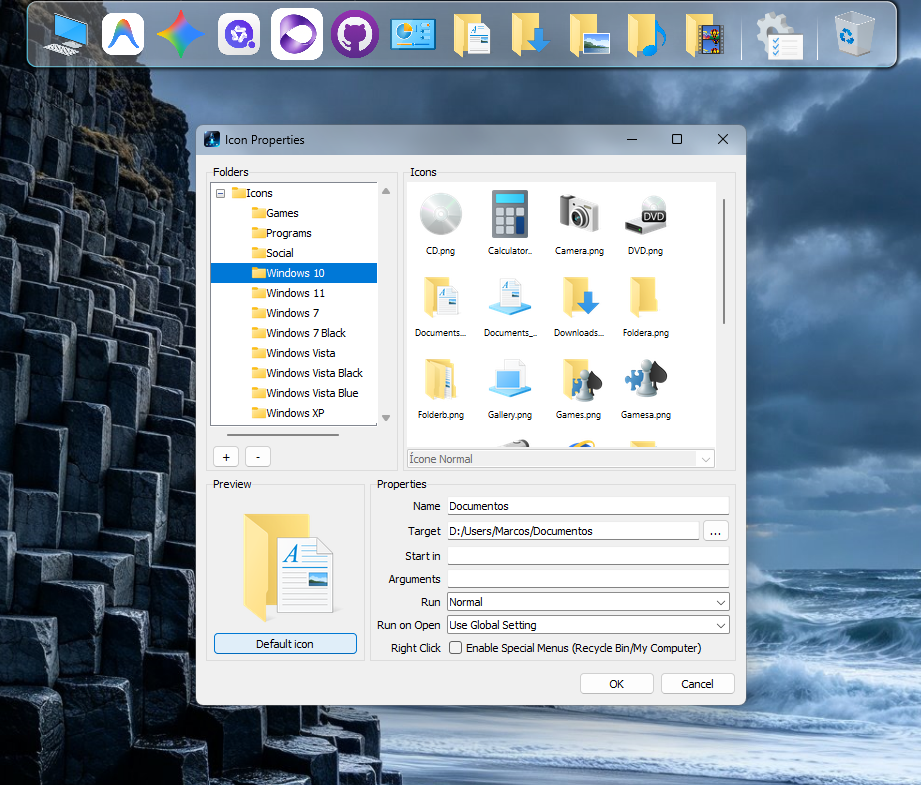
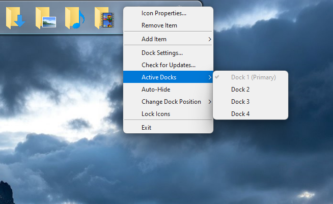
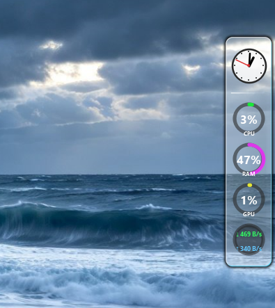
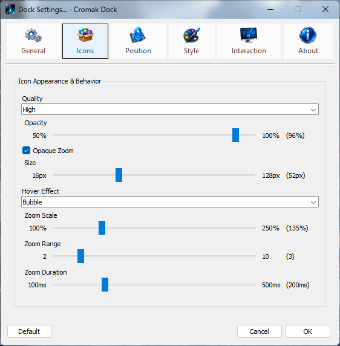
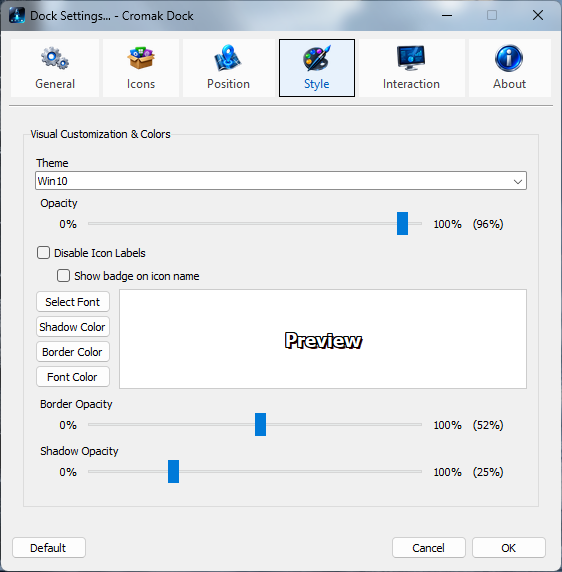
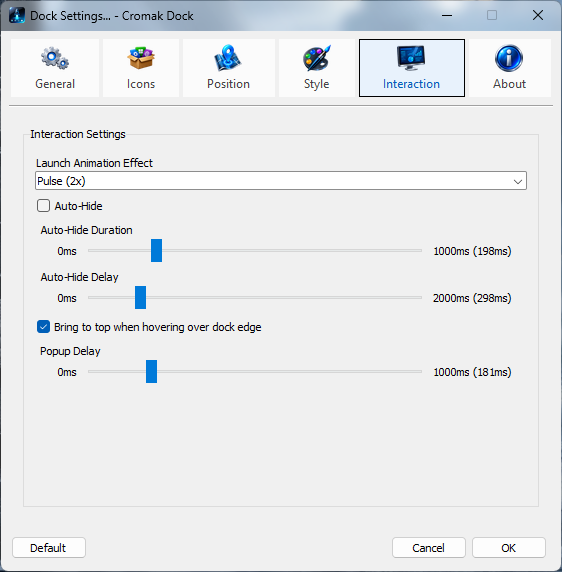

Cromak Dock
Barra de Inicialização Fluida, Launcher Elegante e Widgets de Monitoramento para Windows.
Versão: 1.1.2 (Build 2026.10)
Inspirado no consagrado legado do RocketDock e aperfeiçoado com engenharia moderna. O Cromak Dock entrega uma experiência tátil impecável: ampliação de ícones com física de cosseno/gaussiana, suporte simultâneo a até 4 docks independentes, detecção inteligente de programas em execução, widgets dinâmicos de hardware e compatibilidade total com skins clássicas. Grátis, 100% offline e sem telemetria.

Produtividade extrema, estética lendária e respeito aos seus recursos.
Por anos, os usuários de Windows ficaram sem uma barra de inicialização verdadeiramente estável, rápida e livre de bloatware. Os iniciadores antigos foram abandonados, travavam no Windows 11 e consumiam processador sem necessidade.
O Cromak Dock foi reescrito do zero com foco em aceleração de hardware nativa. Quando o mouse repousa, o consumo de processamento é virtualmente zero. Quando você interage, os ícones respondem com uma curvatura de zoom matemática perfeita, permitindo arrastar arquivos, discos, pastas e atalhos com facilidade instantânea.
Destaques & Diferenciais do Cromak Dock
-
Física de Zoom Suave & 3 Modos Visuais
Curva de ampliação contínua sem quebras ou degraus. Escolha entre os efeitos Bolha (gaussiano clássico), Platô (topo amplo para múltiplos ícones) e Zoom Simples, com raio e tempo de transição ajustáveis.
-
Suporte Nativo a até 4 Docks Independentes
Posicione barras em qualquer borda da tela ao mesmo tempo: uma no rodapé para apps, outra no topo para atalhos de trabalho, esquerda para discos e direita para painel de monitoramento. Cada uma com tamanho e regras próprias.
-
Widgets em Tempo Real (Hardware & Sistema)
Monitore CPU, Memória RAM, GPU e tráfego de Rede com gráficos e porcentagens atualizadas. Inclui relógio com ponteiros suaves e Lixeira dinâmica com esvaziamento direto pelo menu de contexto.
-
Indicadores de Execução & Animação de Lançamento
Saiba instantaneamente quais programas estão abertos com setas indicadoras que se adaptam à borda da tela. Dispare comandos com animações tátil-visuais de Salto, Giro ou Pulsar.
-
Importador RocketDock & Drag-and-Drop
Migre sua dock em 1 clique! O importador nativo lê arquivos
Settings.inido RocketDock e converte seus atalhos instantaneamente. Arraste qualquer executável, pasta ou atalho diretamente para a barra. -
Mais de 40 Temas & Personalização Extrema
Compatibilidade nativa com skins clássicas (formatos .ini e .json), personalização de fontes retrô, sombras com desfoque, opacidade de bordas e auto-ocultação inteligente com ativação por borda de tela.
Galeria de Demonstração
Veja a fidelidade visual, menus de contexto, opções de múltiplos docks e os painéis de personalização.
Dock Principal com Efeito Bolha
Visão geral da barra de tarefas inferior com física de ampliação suave, ícones de alta resolução e indicador de processos abertos.

Propriedades Avançadas de Ícones
Edição de parâmetros de comando, diretório de trabalho, argumentos, seletor de pastas de ícones com navegação rápida e pré-visualização.

Menu de Contexto & Gestão de Docks
Acesso rápido às opções de itens, travar ícones, auto-ocultação, alternância instantânea entre Dock 1, 2, 3 e 4 e atalhos de sistema.

Dock Lateral & Monitoramento
Exemplo de dock vertical dedicada a widgets dinâmicos: Relógio, medidor de uso de CPU, RAM, GPU e taxa de tráfego de Rede em tempo real.

Aparência e Comportamento dos Ícones
Controle preciso de tamanho base, escala no hover (até 300%), raio de alcance do zoom, duração de transição e modos de filtro.

Estilo Visual, Tipografia & Temas
Seletor de temas visuais, opacidade da barra, tipografia personalizada (fonte, tamanho, negrito), cor e opacidade de sombras e contornos.

Interação, Ocultação & Efeitos
Ajustes de tempo de resposta para pop-ups de legenda, duração de auto-hide, ativação automática ao encostar o cursor na borda e efeitos de clique.
Software Gratuito & Apoio Voluntário
O Cromak Dock é um software 100% gratuito, sem limites de atalhos e sem propagandas. Você pode baixar e utilizar livremente, ou fazer uma contribuição voluntária para apoiar o desenvolvimento independente.
Versão Completa (Grátis)
- Suporte a até 4 Docks Simultâneas
- Física Suave de Zoom (Bolha, Platô, Simples)
- Mais de 40 Temas & Compatibilidade RocketDock
- Todos os Widgets (CPU, RAM, GPU, Rede, Relógio, Lixeira)
- Importador de Configurações em 1 Clique
- 100% Offline & Armazenamento Local em %APPDATA%
Apoiador do Projeto
- O software é 100% idêntico, gratuito e completo, mas:
- Você incentiva novas atualizações e melhorias contínuas
- Ajuda a manter a infraestrutura de download e suporte online
- Contribui diretamente com o ecossistema independente da Cromak
- Nosso sincero e eterno agradecimento ❤️
🔒 Software livre, transparente e seguro distribuído com orgulho pela Cromak Technology.
Idiomas Nativos Integrados
O Cromak Dock conta com suporte nativo completo para Português e Inglês, permitindo a troca instantânea diretamente no menu de preferências do aplicativo.
Requisitos do Sistema
Sistema Operacional
Windows 10 / 11 (x64 Nativo)
Processador
Dual-Core (1.0 GHz ou superior)
Memória RAM
128 MB Livres (Modo vitrine ultraleve)
Armazenamento
80 MB de espaço em disco
Privilégios
Usuário Padrão (Não requer elevação admin diária)
Armazenamento de Dados
100% em %APPDATA%
Pasta de instalação em Program Files permanece intacta e somente-leituraPerguntas Frequentes (FAQ)
O Cromak Dock é realmente gratuito?
Sim! O Cromak Dock é distribuído gratuitamente pela Cromak Technology, com todas as funções desbloqueadas, sem limites de atalhos e sem exibição de anúncios. O botão de doação é uma contribuição totalmente voluntária para quem deseja apoiar o projeto.
Posso usar meus temas antigos do RocketDock?
Sim! O motor gráfico do Cromak Dock foi desenvolvido com total compatibilidade retroativa para ler e renderizar nativamente arquivos de skin no formato .ini clássico, além do formato moderno .json. Basta colocar a pasta do tema no diretório de temas.
Como funciona o recurso de até 4 docks simultâneas?
Você pode ativar e gerenciar até 4 barras ao mesmo tempo através do menu de contexto ou nas configurações. Cada dock pode ter sua posição própria (Inferior, Superior, Esquerda ou Direita), seu próprio conjunto de ícones e comportamentos exclusivos de auto-ocultação.
Onde as configurações e ícones ficam salvos?
Seguindo as boas práticas estritas do Windows, todos os arquivos de configuração (settings.json) e caches de ícones ficam na pasta segura do seu perfil de usuário (%APPDATA%\Cromak Technology\Dock). A pasta de instalação em Arquivos de Programas nunca é modificada em tempo de execução.